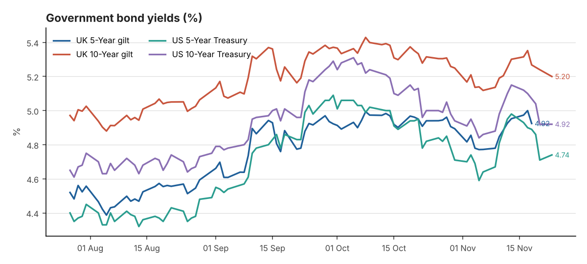
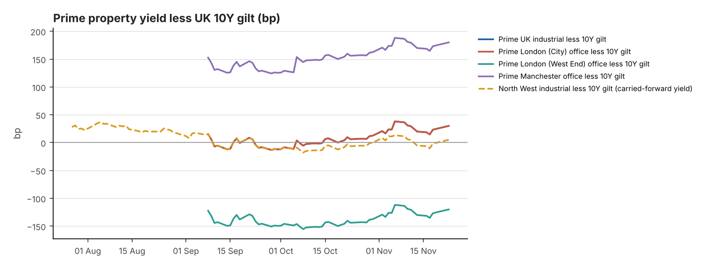

Date: 24 November 2026
Reporting time: 06:30 UK time
Generated 2026-11-24 06:32 UTC · run 20261124T063201Z · commentary: analyst note. Each figure shows its own observation date. Definitions, data-quality notes and full sources are in the appendix.
Alerts - New listings: 7 new North West industrial listings (19,403 sq ft); largest Land & Premises at Gawsworth, Macclesfield, Cheshire, 6,438 sq ft. - Corporate action — SEGRO: Recommended share offer from Prologis (0.0920 new Prologis shares per SEGRO share, partial cash alternative at 1,031.7p; completion expected H1 2027). Shares trade on deal terms.
| Market | Latest Yield | Daily | 7-Day | 30-Day | Observed | Source |
|---|---|---|---|---|---|---|
| UK 5-Year gilt | 4.92% ⚠ stale | -7.6bp | +3.9bp | -4.3bp | 18 Nov 2026 | Bank of England Database (IADB) |
| UK 10-Year gilt | 5.20% | -4bp | -11.5bp† | -11.5bp† | 23 Nov 2026 | Trading Economics (secondary) |
| US 5-Year Treasury | 4.74% | +3bp | -19bp | -8bp | 23 Nov 2026 | US Treasury - Daily Treasury Par Yield Curve Rates |
| US 10-Year Treasury | 4.92% | 0bp | -20bp | -8bp | 23 Nov 2026 | US Treasury - Daily Treasury Par Yield Curve Rates |
| UK 2-Year gilt | 4.89% | +1bp | -15bp† | Not verified | 23 Nov 2026 | Trading Economics (table) (secondary) |
| UK 30-Year gilt | 5.69% | Not verified | -10bp | Not verified | 23 Nov 2026 | Trading Economics (secondary) |
| US 2-Year Treasury | 4.63% | 0bp | -20bp | -6bp | 23 Nov 2026 | US Treasury - Daily Treasury Par Yield Curve Rates |
| US 30-Year Treasury | 5.29% | -2bp | -17bp | -4bp | 23 Nov 2026 | US Treasury - Daily Treasury Par Yield Curve Rates |
10Y less 5Y: UK Not verified · US +18bp (23 Nov 2026)
Changes in basis points. † = comparison crosses sources or instruments (indicative).

| Indicator | Latest | Previous | Date | Change | Source |
|---|---|---|---|---|---|
| BoE Bank Rate | 4.00% | 3.75% | effective 05 Nov 2026 | +25bp | Bank of England Database (IADB) |
| SONIA (overnight fixing) | 3.9841% | 3.9840% | 19 Nov 2026 | 0bp | FRED IUDSOIA |
| 5Y SONIA swap (finance-cost reference) | 4.58% ⚠ stale | 4.74% | 04 Nov 2026 | -16bp | Knight Frank Prime Yield Guide (Macrobond/ICAP) (secondary) |
| Fed funds target range | 3.75–4.00% | 3.50–3.75% | effective 17 Sep 2026 | +25bp | FRED DFEDTARU |
Next MPC decision: 17 Dec 2026
Confirmed: Bank Rate 4.00%; next MPC decision 17 December. The 2Y gilt is about 4.89% on market quotes, below its 5.04% peak on 16 November.
Not verified: OIS pricing. The last press-reported December hike probability was about 80% (Reuters, 18 Nov).
Interpretation: short rates have stabilised below their peak. With no major UK data before the MPC, the Bank's own communication will drive December expectations and the swap rates that set property debt costs.
| Indicator | Latest | Previous | Period | Trend | Source |
|---|---|---|---|---|---|
| UK CPI (12m) | 3.6% | 3.5% | Oct 2026 (pub. 18 Nov) | Accelerating | ONS MM23 |
| UK CPIH (12m) | 3.7% | 3.6% | Oct 2026 (pub. 18 Nov) | Accelerating | ONS MM23 |
| UK core CPI (12m, ex energy, food, alcohol & tobacco) | 2.8% | 2.8% | Oct 2026 (pub. 18 Nov) | Accelerating | ONS MM23 |
| US CPI-U (12m, NSA) | 3.7% | 3.4% | Sep 2026 | Accelerating | BLS CPI via FRED CPIAUCNS |
| US core CPI-U (12m, NSA) | 2.6% | 2.4% | Sep 2026 | Broadly stable | BLS CPI via FRED CPILFENS |
Next ONS inflation release: see Section 14
| Sector | Latest | Basis | Previous | Move | Evidence | Source |
|---|---|---|---|---|---|---|
| UK Industrial & Logistics | 5.50% | NIY | 5.25–5.50% | +12.5bp | Nov 2026 | Knight Frank Prime Yield Guide |
| Prime Distribution Warehouses ‡ | 5.50–5.75% | Not stated | 5.50% | +12.5bp | Nov 2026 | Knight Frank Prime Yield Guide |
| South East Industrial ‡ | 5.25–5.50% | Not stated | 5.25% | +12.5bp | Nov 2026 | Knight Frank Prime Yield Guide |
| Greater London Industrial | 5.25% | Not stated | 5.00–5.25% | +12.5bp | Nov 2026 | Knight Frank Prime Yield Guide |
| Prime Multi-let Industrial (Rest of UK) ‡ | 5.25–5.50% | Not stated | 5.25% | +12.5bp | Nov 2026 | Knight Frank Prime Yield Guide |
| North West Industrial ‡ | 5.25% | NIY | — | — | Q4 2025 ⚠ carried forward (328d) | Knight Frank LOGIC: North West 2025 Review |
| UK Logistics (average of 71 submarkets) ‡ | 5.74% | NIY | 5.59% | +15bp | Q3 2026 ⚠ carried forward (55d) | Cushman & Wakefield UK Industrial MarketBeat |
| London West End Offices | 4.00% | Not stated | 3.75–4.00% | +12.5bp | Nov 2026 | Knight Frank Prime Yield Guide |
| London City Offices | 5.50% | Not stated | 5.25–5.50% | +12.5bp | Nov 2026 | Knight Frank Prime Yield Guide |
| Manchester Offices ‡ | 7.00% | Not stated | 6.75–7.00% | +12.5bp | Nov 2026 | Knight Frank Prime Yield Guide |
| Regional UK Offices ‡ | 7.00% | Not stated | 6.75–7.00% | +12.5bp | Nov 2026 | Knight Frank Prime Yield Guide |
Published prime yields, carried forward until new evidence appears — not daily valuations. ‡ = substitution; see appendix.
| Spread | Property yield | UK 10Y gilt | Latest spread | At evidence date | Previous comparable | Change (property / gilt) | Driver |
|---|---|---|---|---|---|---|---|
| Prime UK industrial less 10Y gilt | 5.50% (NIY, Nov 2026) | 5.20% (23 Nov) | +30bp | +38.2bp | +3.8bp (Oct 2026) | +26.2bp (+12.5bp / +13.7bp) | Both (reinforcing) |
| Prime London (City) office less 10Y gilt | 5.50% (Not stated, Nov 2026) | 5.20% (23 Nov) | +30bp | +38.2bp | +3.8bp (Oct 2026) | +26.2bp (+12.5bp / +13.7bp) | Both (reinforcing) |
| Prime London (West End) office less 10Y gilt | 4.00% (Not stated, Nov 2026) | 5.20% (23 Nov) | -120bp | -111.8bp | -146.2bp (Oct 2026) | +26.2bp (+12.5bp / +13.7bp) | Both (reinforcing) |
| Prime Manchester office less 10Y gilt | 7.00% (Not stated, Nov 2026) | 5.20% (23 Nov) | +180bp | +188.2bp | +153.8bp (Oct 2026) | +26.2bp (+12.5bp / +13.7bp) | Both (reinforcing) |
| North West industrial less 10Y gilt | 5.25% (NIY, Q4 2025) | 5.20% (23 Nov) | +5bp | +78.4bp | Not verified | Not verified | Not verified |
A simple yield gap (property yield midpoint less 10Y gilt) — not a full measure of risk or relative value.

Market commentary (confirmed data points are listed in the appendix)
The rally in gilts continued, though more slowly. The 10-year was quoted at about 5.20% on 23 November, against roughly 5.37% a week earlier, and the 30-year eased to about 5.69%. Official Bank of England data could not be retrieved, so these are market quotes. US Treasuries were flat, and listed logistics REITs rebounded sharply. EastGroup rose 3.0% and Prologis 2.2%, recovering part of last week's fall. The sector's moves continue to be larger than rates alone would explain.
For property pricing, the prime industrial cushion over gilts has rebuilt to about 30bp, the widest since early November. If that holds into December, agents' yield updates are more likely to show prime distribution stable or only marginally weaker than the 25bp outward move that looked likely a week ago.
Development news is about supply. Muse's 300,000 sq ft plan at Ashton Moss joins Indurent's 838,000 sq ft Heywood proposals, giving Greater Manchester two significant big-box pipelines on the M60 and M62. Both will need pre-lets. Peel's completed £632m takeover of Harworth, marked by the chief executive's departure, consolidates a large strategic land bank, including North West employment land, under private ownership.
On policy, abolishing or merging Natural England and the Environment Agency could shorten planning timelines significantly, but nothing is decided.
Interpretation: the market backdrop has improved modestly. Supply proposals are rising, so occupier pre-lets, not speculative starts, will determine what actually gets built.
| Company | Price | Daily | 5-Day | 1-Month | YTD | Mkt cap | Div. yield | Close | Source |
|---|---|---|---|---|---|---|---|---|---|
| SEGRO (SGRO.L) | 922.6p | — | — | — | — | Not verified | 3.4% | 09 Nov ⚠ stale | StockInvest.us (single dated source) (secondary) |
| Tritax Big Box REIT (BBOX.L) | 145.4p | — | — | — | — | Not verified | 5.5% | 27 Oct ⚠ stale | Kalkine Media (dated 27 Oct 2026; single source) (secondary) |
| LondonMetric Property (LMP.L) | 188.2p | +0.2% | — | — | — | Not verified | 6.7% | 09 Nov ⚠ stale | StockInvest.us; corroborated by AJ Bell last trade 188.2p (secondary) |
| British Land (BLND.L) | Not verified | — | — | — | — | Not verified | — | — | — |
| Landsec (LAND.L) | 659.0p | — | — | — | — | Not verified | — | 27 Oct ⚠ stale | Kalkine Media (dated 27 Oct 2026; single source) (secondary) |
| Derwent London (DLN.L) | Not verified | — | — | — | — | Not verified | — | — | — |
| Great Portland Estates (GPE.L) | Not verified | — | — | — | — | Not verified | — | — | — |
| Prologis (PLD) | $125.14 | +2.2% | -1.9% | -1.0% | -2.0% | Not verified | — | 23 Nov | Nasdaq (official close) |
International logistics comparators
| Company | Price | Daily | 5-Day | 1-Month | YTD | Mkt cap | Div. yield | Close | Source |
|---|---|---|---|---|---|---|---|---|---|
| EastGroup Properties (EGP) | $197.37 | +3.0% | +0.6% | -0.8% | +10.8% | Not verified | — | 23 Nov | Nasdaq (official close) |
| First Industrial Realty Trust (FR) | $54.06 | +1.9% | -1.6% | -0.7% | -5.6% | Not verified | — | 23 Nov | Nasdaq (official close) |
| Rexford Industrial Realty (REXR) | $36.36 | +2.0% | -2.9% | -6.1% | -6.1% | Not verified | — | 23 Nov | Nasdaq (official close) |
| WDP (Warehouses De Pauw) (WDP.BR) | Not verified | — | — | — | — | Not verified | — | — | — |
| CTP (CTPNV.AS) | Not verified | — | — | — | — | Not verified | — | — | — |
Latest completed trading session before the 06:30 UK briefing; end-of-day data, not real-time. London prices are in pence (GBX); US in USD; Euronext in EUR. Changes are share-price returns only, excluding dividends (not total shareholder return). ⚑ = daily move of 3% or more. Market caps from Nasdaq are as at retrieval. Dividend yield = latest annualised dividend from company reports ÷ price, where on file. "Not verified" = no licensed price feed returned data and no cited close is on file.
SEGRO — Prologis offer look-through: 0.0920 × Prologis close $125.14 (23 Nov) ÷ $1.3104/£ (20 Nov, FRED) = 878.6p per SEGRO share in Prologis stock, vs SEGRO close 922.6p (-4.8% offer spread). Partial cash alternative: 1031.7p (capped). The FX rate lags by several days, so this is indicative only.
Corporate actions on the watchlist
| Metric | SEGRO | Tritax Big Box REIT | LondonMetric Property |
|---|---|---|---|
| EPRA NTA per share | 902p | 185.88p | 200.6p |
| Loan-to-value | 31% | 32.9% | 36.7% |
| Average cost of debt | 2.8% | 3.6% | 4.0% |
| WAULT | — | 9.9 yrs | 16+ yrs |
| Occupancy | 94.5% | 93.5% | 97.4% |
| Like-for-like rental growth | 5.3% | 5.1% | 5.8% |
| ERV growth | 1.8% | 1.9% | 3.3% |
| Development pipeline | £90m potential rent | 507MW secured power | No direct development |
| Dividend (annualised) | 31.1p | 8.0p | 12.6p |
| Report basis | H1 2026 (30 Jun) | H1 2026 (30 Jun) | FY 2026 (31 Mar) |
| Premium / (discount) to EPRA NTA | +2.3% (price 09 Nov) | -21.8% (price 27 Oct) | -6.2% (price 09 Nov) |
Metrics are from each company's latest report (row "Report basis"; some metrics come from later trading updates — full detail in data/reit_fundamentals.csv). Share-price dates are shown separately.
| Date | Company | Announcement | Type |
|---|---|---|---|
| 2026-11-19 | GPE | Another strong half-year performance | Results |
| 2026-11-18 | DLN | Admission to Trading | M&A / corporate action |
| 2026-11-18 | BLND | Half-year Financial Report | Results |
| 2026-11-16 | GPE | GPE sells 2 Aldermanbury Square to Rothesay | Other |
| 2026-11-13 | LAND | Half-year Financial Report | Results |
Verified: - LondonMetric half-year results are due at 07:00 today and are not yet in this briefing. - No new SEGRO or Tritax announcements. - US logistics REITs rebounded: EastGroup +3.0%, Prologis +2.2%, Rexford +2.0%. - No verified UK closes since 9 November.
Interpretation: - The US rebound accompanied stable Treasury yields, which suggests sector sentiment rather than rates drove last week's sell-off and this week's bounce; correlation is not causation. - For LondonMetric, the key numbers are the NTA (200.6p at March, before Picton), LTV (36.7%) and any change in its 4.0% cost of debt. These will appear in tomorrow's briefing.
2. Environment Agency and Natural England could face axe in Labour quango shake-up
PLANNING / DEVELOPMENT · new · Property Week, published 2026-11-23
First secretary of state Louise Haigh told the CBI the government is reviewing the functions of Natural England and the Environment Agency and is considering abolishing them as part of a 'rewiring of the state'. The two bodies are statutory consultees on flood risk, ecology and nutrient issues in planning decisions.
Why this matters: Natural England and the EA are behind many of the delays developers face, such as the four years Wrexham's 80,700 sq ft scheme spent on nutrient neutrality. Abolition or merger could shorten planning timelines, but transition could create a period of uncertainty for live applications.
1. Muse readies plans for 300,000 sq ft shed at Ashton Moss
NORTH WEST INDUSTRIAL · ▲ 100,000+ sq ft · new · Place North West, published 2026-11-23
Muse is preparing a planning application, with Stantec and AEW, for a 300,000 sq ft unit on 20 acres of the eastern parcel at Ashton Moss, north of Lord Sheldon Way in Tameside, near M60 J23. The site is part of the wider 1.3m sq ft Ashton Moss Innovation Park and was in a 1999 outline consent that delivered the leisure park, Sainsbury's and Nexus House.
Why this matters: A 300,000 sq ft unit at M60 J23 would be one of very few big boxes inside the M60 ring. It competes directly with Indurent's Heywood proposals and will test whether occupiers pre-let at today's rents. Expect it to be pitched to occupiers as a design-and-build or pre-let opportunity.
3. Harworth chief executive announces departure following Peel takeover
FINANCE / CAPITAL MARKETS · follow-up · Property Week, published 2026-11-23
Follow-up to Peel's takeover of Harworth: chief executive Lynda Shillaw has left Harworth Group after six years, following its £632m takeover by Peel's vehicle Peel Pepper, accepted by Harworth's board in September. Harworth is a major promoter of industrial and logistics land, including in the North West.
Why this matters: Peel's ownership of Harworth's land bank, including North West logistics sites, concentrates control of strategic employment land in one private owner. That could change how quickly Harworth sites are brought forward and on what terms.
4. Widnes West Bank comes under regen microscope
PLANNING / DEVELOPMENT · new · Place North West, published 2026-11-23
Halton Council will enter a collaboration agreement with Halton Housing, which owns about a quarter of the 750 homes at West Bank near the Silver Jubilee Bridge, to develop a long-term regeneration strategy. Options include a new retail centre, retrofitting housing and new homes, and the strategy will underpin future business cases and grant bids.
5. Barratt Redrow to acquire 44 acres in Sandbach
PLANNING / DEVELOPMENT · new · Place North West, published 2026-11-23
Wain Estates has exchanged contracts to sell a 44-acre site off Crewe Road, Sandbach, to Barratt Redrow. It has consent for 160 houses, a 70-bed care home and a 30-acre park, granted on appeal in April after Cheshire East refused the plans against officers' advice.
All Place North West headlines since the last briefing (Mon 23 Nov 06:00 onwards; stories summarised above are not repeated; industrial items first)
| Published | Headline | |
|---|---|---|
| Mon 14:50 | Gabrilatsou among 12 JLL planners heading to Rapleys | |
| Mon 13:30 | Directors take the helm at FBI | |
| Mon 10:40 | Applications open for person to lead ‘once-in-a-lifetime’ Liverpool regen | |
| Mon 10:15 | [INTERVIEW | Paul Richards: I am not ready to ease off](https://www.placenorthwest.co.uk/interview-paul-richards-i-am-not-ready-to-ease-off/) |
| Mon 10:10 | Club de Padel submits Mayfield proposals | |
| Mon 10:01 | Pringle Homes hopeful after halving Ribble Valley plans | |
| Mon 10:00 | Turning public land into long-term income: how Wildstone partners with the public sector |
North West outlook
Today's sweep added seven small North West listings (19,403 sq ft), the largest being 6,438 sq ft at Gawsworth, Macclesfield, plus several Indurent units at Speke and Knowsley. The 75 Savills listings that dropped out yesterday have returned, so availability is back at about 43.1m sq ft; that source glitch is now confirmed as recurring. The larger story is pipeline. Muse's 300,000 sq ft Ashton Moss proposal adds to Indurent's Heywood plans and Aviva's 400,000 sq ft Manchester Airport scheme, so Greater Manchester now has over 1.5m sq ft of big-box proposals in planning. Peel's ownership of Harworth adds another large land holder. Expect landlords to compete for a limited pool of large occupiers.
Agents' listings sweep of 2026-11-24 05:08 UTC (source: tracker branch claude/magical-ride-4nijqh, output/daily/Latest New Listings.md).
Compared with the sweep of 2026-11-23 05:08 UTC.
| Property | Location | sq ft | Status | Agents |
|---|---|---|---|---|
| Land & Premises at Gawsworth | Macclesfield, Cheshire | 6,438 | Availability Unconfirmed | Fisher German |
| Unit 36 | Bootle / Liverpool Docks, Merseyside | 4,279 | Availability Unconfirmed | LM6 |
| West Unit 35, Compass Industrial Park | Speke / Halewood, Merseyside | 2,894 | Available at a Future Date | Indurent (landlord) |
| West Unit 33, Compass Industrial Park | Speke / Halewood, Merseyside | 2,875 | Available at a Future Date | Indurent (landlord) |
| Suite 6J, Knowsley Moorgate Point | Knowsley Industrial Park, Merseyside | 1,400 | Available at a Future Date | Indurent (landlord) |
| Unit 207 – Site B, Phoenix Close Industrial Estate | Heywood (M62 J19), Greater Manchester | 1,069 | Available Now | Indurent (landlord) |
| North West Unit 92, Compass Industrial Park | Speke / Halewood, Merseyside | 448 | Available Now | Indurent (landlord) |
Returned to market: Unit 12B (3,732 sq ft, Savills); WG225 Winsford Gateway (225,067 sq ft, Legat Owen); Manchester Road, Ashton-Under-Lyne, Greater Manchester, OL7 0DA (10,746 sq ft, CPP (Commercial Property Partners)); Crumpsall Lane (62,867 sq ft, Savills); Unit D3 (8,794 sq ft, Savills); Unit D5 (9,472 sq ft, Savills); Unit 3 (8,542 sq ft, Savills); Unit 17-18 Wingates Industrial Estate, Barrs Fold Road, Bolton, BL5 3XP (20,235 sq ft, Savills); D1 Nasmyth Business Centre, Eccles, M30 OSN (9,277 sq ft, Savills); Bower Street (size n/d sq ft, Savills); Unit 7 Port Road, Port Road Business Park, Carlisle, CA2 7AF (9,743 sq ft, Savills); Air 66 & Air 84 (152,286 sq ft, Savills); Trafford 150, Longbridge Road, Manchester, M17 1SN (148,240 sq ft, Savills); Unit A1 / A6 - A9 (9,609 sq ft, Savills); Sambro International (184,422 sq ft, Savills); Foundry Point (49,606 sq ft, Savills); Unit 1 (20,653 sq ft, Savills); Unit 9 & 19 (10,534 sq ft, Savills); Symmetry Park (size n/d sq ft, Savills); Neon (74,000 sq ft, Savills); Units 1 & 2 Royce Trading Estate, Ashburton Road West, Trafford Park, Manchester, M17 1RY (215,708 sq ft, Savills); Atlantic Park, Liverpool, L30 4AB (388,000 sq ft, Savills); Unit 2, Prince Mead Place, Kings Park, Manchester, M17 1PN (23,992 sq ft, Savills); Mill Lane Industrial Estate, Stanney Mill Road, Chester, CH2 4HX (37,300 sq ft, Savills); Unit 235 - Europa Trade Park (3,955 sq ft, Savills); Units 4 & 5 Clayton Road Industrial Estate (23,005 sq ft, Savills); Unit 7 (5,942 sq ft, Savills); Unit 8, Gemini Trade Park, Warrington, WA5 7YF (6,526 sq ft, Savills); Unit 6 (8,072 sq ft, Savills); Velocity (Unit A) (31,500 sq ft, Savills); Jensen Court (26,456 sq ft, Savills); Knowsley 120, Acornfield Road, Knowsley Industrial Park, Liverpool, L33 7UF (119,941 sq ft, Savills); Atlantic Park, Liverpool, L30 4AB (351,389 sq ft, Savills); Kings Park, Trafford Park, Manchester, M17 1QA (63,060 sq ft, Savills); Unit 6 Millbrook Industrial Estate (5,995 sq ft, Savills); 4B Eagle Park Drive, Warrington, WA2 8JA (6,370 sq ft, Savills); Widnes 258 (257,500 sq ft, Savills); Unit 336 (85,757 sq ft, Savills); B2 (5,480 sq ft, Savills); Unit E7A (77,000 sq ft, Savills); Unit E8 (11,915 sq ft, Savills); Trade City Sharston (62,662 sq ft, Savills); Unit C3 (4,390 sq ft, Savills); Unit C5 (4,390 sq ft, Savills); Unit C10 (4,390 sq ft, Savills); Unit C7 (4,390 sq ft, Savills); Unit C12 (4,390 sq ft, Savills); Unit C13 (4,390 sq ft, Savills); Unit 62 (52,065 sq ft, Savills); Unit 39 (4,938 sq ft, Savills); Unit 1, 2 & 3 Millbrook Industrial Estate (26,221 sq ft, Savills); Stainburn Road, Openshaw, M11 2QA (101,316 sq ft, Savills); B10-12 (25,107 sq ft, Savills); Trafford Gate (58,211 sq ft, Savills); Unit 12-15 Stakehill Industrial Estate, Middleton, M24 2FL (23,480 sq ft, Savills); 14 Calver Road, Winwick Quay, Warrington, WA2 8UD (44,246 sq ft, Savills); Burnley 543 (543,269 sq ft, Savills); Unit A12 Barton Business Park, Manchester, M30 0QR (1,192 sq ft, Savills); Unit A6 Barton Business Park, Manchester, M30 0QR (2,854 sq ft, Savills); Unit A7-A9 Barton Business Park, Manchester, M30 0QR (5,568 sq ft, Savills); Unit 4 Melford Court, Warrington, WA1 4RZ (7,794 sq ft, Savills); Bolton 280 (280,619 sq ft, Savills); Unit 224 - Europa Trade Park, Warrington, WA5 7TN (3,144 sq ft, Savills); Unit 5B (32,613 sq ft, Savills); Avro Business Park (170,048 sq ft, Savills); Voltage Park (284,000 sq ft, Savills); Symmetry Park (149,000 sq ft, Savills); Symmetry Park (190,000 sq ft, Savills); X-Dock 549 (549,400 sq ft, Savills); Albert Road, Bollington, Macclesfield, SK10 5HS (28,732 sq ft, Savills); Knowsley Park (size n/d sq ft, Savills); Unit 4, 10, 11 and 15, Shepley Industrial Estate North, Manchester, M34 5DR (19,816 sq ft, Savills); Bell Lane, Bury, BL9 6DL (10,534 sq ft, Savills); Queens Rd, Manchester, M40 8RR (size n/d sq ft, Savills); Unit 8 Alexandria Court, Ashton-under-Lyne, OL7 0QN (4,650 sq ft, Savills) Removed: Oxw327, Fraser Place (327,561 sq ft, DTRE); Unit 6A, Ashcroft Road (10,667 sq ft, LM6); Unit 560, Metroplex Business Park, Salford, M50 2UE (7,571 sq ft, BC Real Estate); Unit 3B Crewe Trade Park (6,073 sq ft, Legat Owen); WGT Winsford Gateway (3,058 sq ft, Legat Owen); Unit 3A, Broadoak Business Park, Ashburton Road West, Trafford Park, M17 1RW (2,850 sq ft, BC Real Estate); Zone 5 – Unit S16, Bradley Hall Trading Estate (1,683 sq ft, Indurent (landlord)) New joint agents: Haydock 23, Haydock, Merseyside (+Savills); Unit G Roundthorn Industrial Estate, Ennis Close, Manchester, M23 9LE (+Savills); Titan (+Savills); C Block (+Savills); Unit D1, Ennis Close, Manchester, M23 9LE (+Savills); Unit C2 Penrhyn Court (+Savills); Park Parade Industrial Estate, Ashton-Under-Lyne, OL6 7PP (+Savills); Urban X (+Savills); Viking Park (+Savills); Unit 4A Aston Way (+Savills); Brookside Business Park (+Savills); Melford Court (+B8 Real Estate, Savills); Logistics City Sharston (+Savills); Kingsland Grange Industrial Estate (+Savills); Altitude (+Savills); Apex (+Savills); Beacon Point (+Savills); Units 5B, 5D, 5F (+Savills); Central 600, Lancashire Central, Preston, PR5 6BZ (+Savills); West Unit 39, Compass Industrial Park (+Indurent (landlord)); Unit 2, Connect Park, St. Helens, WA11 9TH (+Savills); Unit 15, Gawsworth Court (+Savills); Millfield Park (+Savills); Satellite Park, Chadderton, Manchester, M24 1RU (+Savills); Unit 1 Atlantic Park (+Savills); Northbank Industrial Estate (+Savills); Unit 1 Walker Park (+Savills); Boston Court, Salford, M50 2GN (+Savills); Unit 17, Gemini Business Park, Europa Boulevard, Warrington, WA5 7TP (+Savills); Unit 2 Atlantic Park (+Savills); Unit 245 - Europa Trade Park, Warrington, WA5 7TN (+Savills); Unit 3 Atlantic Park (+Savills); Unit 4 Atlantic Park (+Savills); Unit 74 Venture Point West (+Savills); Unit 76 Venture Point West (+LM6, Savills); Unit 8, Walker Industrial Estate, Blackburn, BB1 2QE (+Savills); Unit 80 Venture Point West (+Savills); Unit 90 - 92 Venture Point West (+Savills); Unit A18 (+Savills); Unit E7B (+Savills); Trafford Wharf Industrial Estate (+Savills); Unit B Barton Business Park, Cawdor Street, Manchester, M30 0QR (+Savills); Venture Court (+Savills); Crewe 335 (+Savills); Unit 10 Dalton Way (+Savills); Unit 9, Gawsworth Court (+Savills) Sources not fully checked: BC Real Estate – Partial
Full schedule: North West Industrial & Logistics Availability.xlsx (tracker branch claude/magical-ride-4nijqh).
6. Native Land secures £226m development financing for Belgravia scheme
FINANCE / CAPITAL MARKETS · new · Property Week, published 2026-11-23
Native Land has secured £226m of refinancing for a super-prime Belgravia development, including a £160m senior facility from Barclays alongside capital from Malaysia's Amcorp Group and a Qatar-based family office. It funds completion of the £41m freehold purchase of Kilmuir House and 62 South Eaton Place from Grosvenor.
| Date | Event |
|---|---|
| Tue 24 Nov | LondonMetric half-year results |
Confirmed data points used in the commentary
Retrieval failures and data gaps
Property yield substitutions (‡)
Definitions
Analyst sources
claude/magical-ride-4nijqh, sweep of 24 Nov 2026 05:08 UTC.Prepared from public sources for professional information; not investment advice. History: data/observations.csv, data/share_prices.csv, data/news_log.csv, data/announcements.csv; audit trail: data/audit_log.csv.